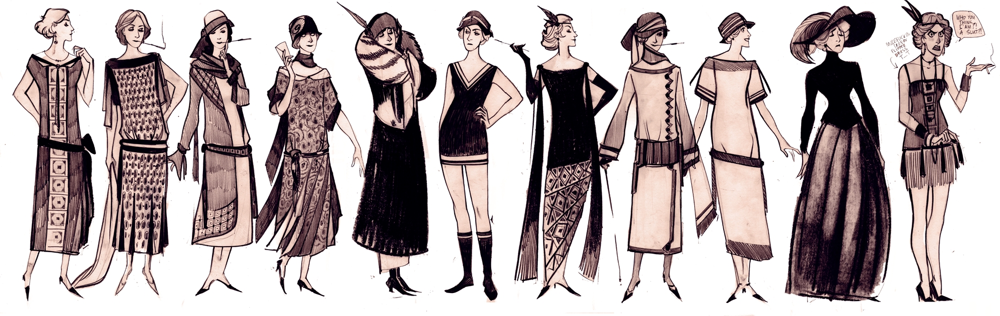

In de jaren twintig, ook wel de ‘roaring twenties’, is er een enorme
maatschappelijke verandering ontstaan en uit zich in een nieuwe tijdsperi-
ode. Zo is er een enorme groei in de welvaart, dit rijkt van Hollywood
en New York naar Parijs en Londen. De mensen krijgen een nieuwe kled-
ingstijl, voornamelijk de vrouwen die zich vrijer gaan kleden. Van
sportkleding, kortere rokken, ‘flapper’ jurken met borduursels tot fluwe-
len capes en zijden pyjama’s.
Het
silhouet
verandert
tijdens
deze
roerige
jaren
twintig,
de
rechte
vorm
wordt
voor-
namelijk
getoond
door
haute
couture
designers.
De
zoom
wordt
hoger
gemaakt
en
er
is
meer
bewegingsvrijheid
in
de
nieuwe
kleding.
De
taille
en
borsten
zijn
minder
belan-
grijk,
waardoor
de
kleding
rechter
en
los
vallend
gemaakt
wordt.
Lingerie
wordt
zo
ontworpen
dat
de
boezem platter lijkt.
De
jaren
twintig
wordt
ook
gekenmerkt
aan
de
jaren
van
dans,
het
nachtleven
en
de
vele
vrije
tijd
die
mensen
had-
den.
De
mensen
hadden
veel
meer
geld
om
uit
te
geven
en
konden
zo
luxere
producten
kopen en veel op stap gaan.
Maar
niet
alles
verliep
zo
eu-
forisch
als
het
lijkt.
Zo

Weetjes over de jaren 20
Wist je dat…
De luchtvaartindustrie kreeg een boost met de passage van de Air Com-
merce Act van 1926
De stijl van de architectuur de Art Deco heette?
De kunstbewegingen in de jaren 20 Surrealisme en Impressionisme waren?
Baseball een populair toeschouwersport werd?
Jazz ontwikkeld werd in de Verenigde staten?
De industrieën overgingen van kolenkracht naar elektriciteit?
Drank verboden was en er zo een soort “gangster groep” ontstond die de
alcohol smokkelde?
Wasmachines, radio’s, auto’s, koelkasten etc. werden uitgevonden?
Make-up voor de jaren 20 niet geaccepteerd werd?